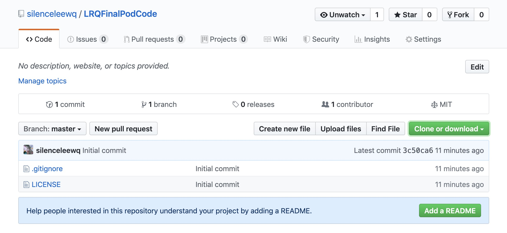
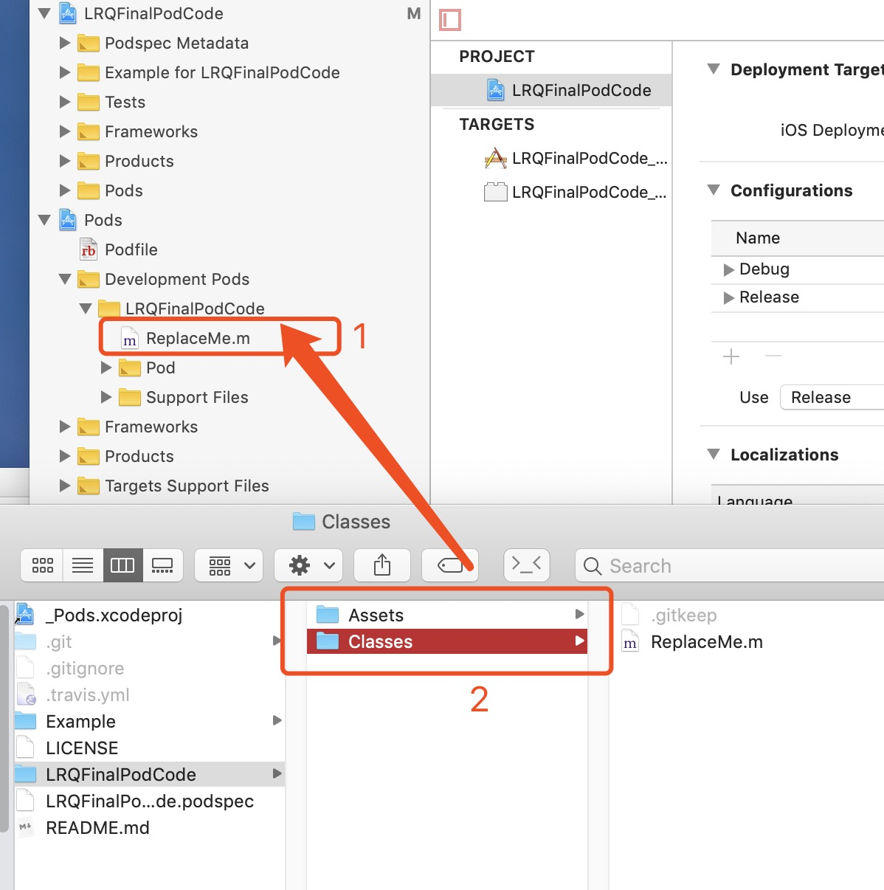

iOS 创建 Pod 私有仓库
前言
创建私有库, 首先要有一个 repo 库, 然后再有代码库. repo 库类似于 pod 库一样, 专门用来存放代码库的版本,地址等信息. 例如 SDWebImage 的历史版本 1.0 ~ 5.0, 以及 SDWebImage 的下载地址, 都是存放在了这个 repo 里面. 代码库 就是 SDWebImage 库本身. 用来给别人使用的库.
创建 pod lib
首先去 github 创建一个代码仓库, 用于存放我们的代码. 
使用命令:
pod lib create LRQFinalPodCode
经过一系列的选择后, 会自动帮你创建好带有 .git 的项目.
打开终端, cd 到项目根目录, 添加 github 创建好的远程库. 可能会遇到冲突, 解决一下即可.
➜ LRQFinalPodCode git:(master) git remote add origin git@github.com:silenceleewq/LRQFinalPodCode.git
➜ LRQFinalPodCode git:(master) git pull origin master --allow-unrelated-histories
➜ LRQFinalPodCode git:(master) git push origin master
添加代码.
创建好了代码库, 我们可以往里面添加代码了. 打开 Example 里面的 .xcworkspace

- 把 ReplaceMe.m 删除.
- 把 Finder 里面的 Assets 和 Classes 拖进项目中(不拖也可以,一般都会拖进去.)
- 将你的代码放进 Class 里面.
修改 LRQFinalPodCode.podspec

- version, 每次发版都需要增加.
- summary 需要写一些比较有意义的描述
- source 那里,最好填写 https 的地址.
还有其他的一些配置, 可以搜一下, 这里不做过多介绍. 修改完后,我们需要对代码库进行一下检查, 如果没有出错,我们就可以推送到远程库了.
使用命令 pod lib lint :
➜ LRQFinalPodCode git:(master) pod lib lint
-> LRQFinalPodCode (0.1.0)
- NOTE | xcodebuild: note: Using new build system
- NOTE | [iOS] xcodebuild: note: Planning build
- NOTE | [iOS] xcodebuild: note: Constructing build description
- NOTE | [iOS] xcodebuild: warning: Skipping code signing because the target does not have an Info.plist file. (in target 'App')
LRQFinalPodCode passed validation.
验证成功后, 我们打开终端进行推送, 推送成功后,执行下面的操作:
➜ LRQFinalPodCode git:(master) git tag -m 'version 0.1.0' 0.1.0
➜ LRQFinalPodCode git:(master) git push --tags
打完标签后, 我们就可以通过下面的方式来使用该库了.
使用自己的 pod 库进行测试.
创建一个测试项目: LRQTestPod
在项目的 Podfile 里面添加下面内容:
platform :ios, '9.0'
target 'LRQTestPod' do
pod 'LRQFinalPodCode', :git => 'https://github.com/silenceleewq/LRQFinalPodCode.git'
end
使用 pod install 进行安装.
➜ LRQTestPod podin
Analyzing dependencies
Pre-downloading: `LRQFinalPodCode` from `https://github.com/silenceleewq/LRQFinalPodCode.git`
Downloading dependencies
Installing LRQFinalPodCode (0.1.0)
Generating Pods project
Integrating client project
Sending stats
Pod installation complete! There is 1 dependency from the Podfile and 1 total pod installed.
➜ LRQTestPod
安装成功.
出现的问题.
CocoaPods之pod search 不到新库的解决办法
如果你使用pod search 发现搜索的库是老的库或者search不到，那么你可以这样试一下： 1、先: pod setup, 2、执行: rm ~/Library/Caches/CocoaPods/search_index.json
亲测有效